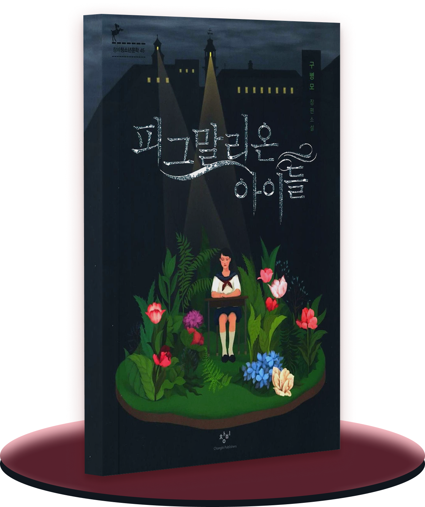
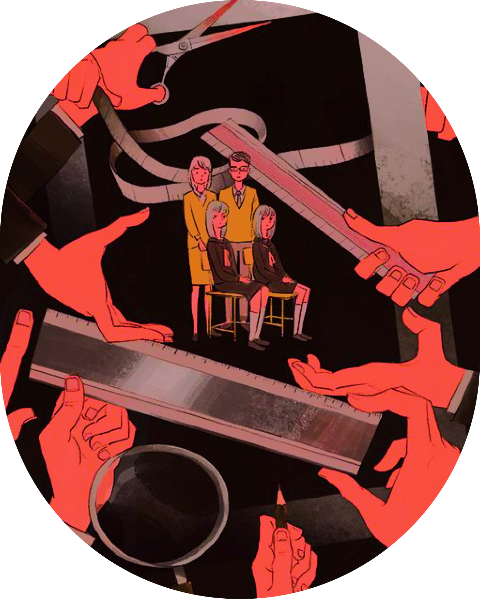
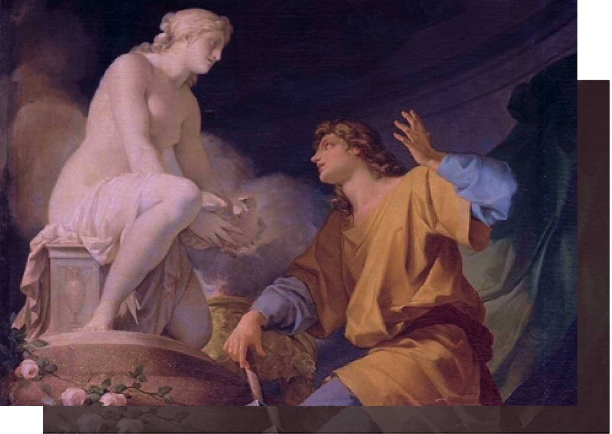
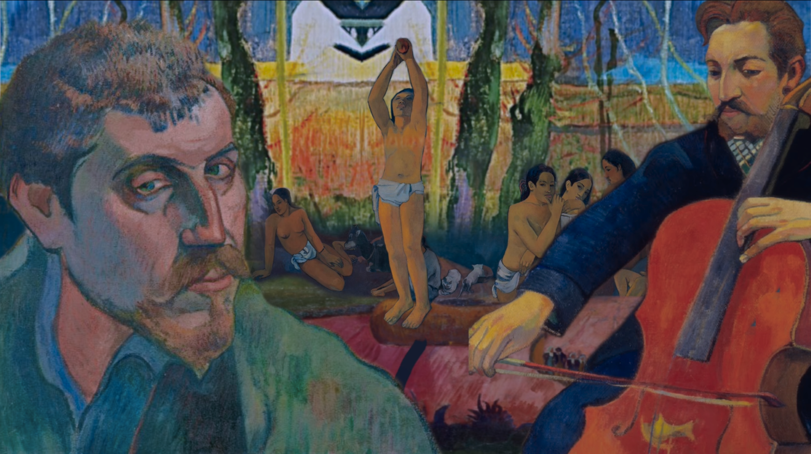

이따금씩 친구들의 어린 시절을 물어본 적이 있었다.
대개 여자인 친구들은 피아노 학원, 미술 학원, 발레 학원을 다녔고,
남자인 친구들은 피아노 학원, 축구 학원, 태권도 학원 등을 다녔더랬다.
지역과 나이를 불문하고 다녔던 학원은 얼추 비슷했다.
그래서 이젠 굳이 묻지 않아도 으레 그런 학원들을 다녔겠거니 하는
것이다. 같은 의미로 중학교, 고등학교 시절 또한 잘 묻지 않는다.
그저 부모님과 선생님이 시키는 대로, 좋은 성적을 받아 좋은 대학교,
취업이 잘 되는 과에 들어가는 것이
일반적인 학생이라면 당연 했기에.

피그말리온 아이들
- 출판사 : 창비

︎진정한 의미의 건강이란 항상 예외의
생활에서 비롯된다는 게 마의 생각이었다.
“스파르타식 재수 학원에 들어간 아이들도 일요일에는
각자의 집에 다녀오고, 전지훈련에 참가한 혈기왕성한
야구 선수들도 몇 달간 빡세게 조인 다음 귀가하기 마
련인데 이 아이들은 돌아갈 데가 없잖아. 설마 주말과
공휴일에도 이 시간을 엄수하는 거야? 평소보다 한두
시간은 늦게 일어나 주고 좀 늘어지기도 하고 그래야
사람 사는 거 아니야?"
생활에서 비롯된다는 게 마의 생각이었다.
“스파르타식 재수 학원에 들어간 아이들도 일요일에는
각자의 집에 다녀오고, 전지훈련에 참가한 혈기왕성한
야구 선수들도 몇 달간 빡세게 조인 다음 귀가하기 마
련인데 이 아이들은 돌아갈 데가 없잖아. 설마 주말과
공휴일에도 이 시간을 엄수하는 거야? 평소보다 한두
시간은 늦게 일어나 주고 좀 늘어지기도 하고 그래야
사람 사는 거 아니야?"

초,중,고 약 12년이 되는 시간 동안
답이 명확한 객관식이나 교과서를 달달 외우면 쓸 수 있는 주관식에만 익숙해진 채 어른이 된 우리는, 과연 누구의 욕망대로 살고 있었나. 그리고 어른의 욕망대로 다시 아이들을 통제하고 있진 않은가.
본인의 조각상인 갈라테이아를 너무나 사랑해
사람이 되길 간절히 바라 결국 사람이 된
갈라테이아를 갖고야 마는 피그말리온처럼
이 책은 우리의 모습을 생생하게 전달하고 있다.
이름보단 성과 직책으로 더 많이 불리는 어른들은
이름뿐인 갈라테이아들을 만들고 있진 않았을까?
그리고 그렇게 자란 우리도
그들처럼 성으로만 불리우고 있진 않을까.
답이 명확한 객관식이나 교과서를 달달 외우면 쓸 수 있는 주관식에만 익숙해진 채 어른이 된 우리는, 과연 누구의 욕망대로 살고 있었나. 그리고 어른의 욕망대로 다시 아이들을 통제하고 있진 않은가.
본인의 조각상인 갈라테이아를 너무나 사랑해
사람이 되길 간절히 바라 결국 사람이 된
갈라테이아를 갖고야 마는 피그말리온처럼
이 책은 우리의 모습을 생생하게 전달하고 있다.
이름보단 성과 직책으로 더 많이 불리는 어른들은
이름뿐인 갈라테이아들을 만들고 있진 않았을까?
그리고 그렇게 자란 우리도
그들처럼 성으로만 불리우고 있진 않을까.
“중요한 건 이 사회에 '다양성'이 존재한다는 사실을
알려 주는 데 있지, 아이들이 그 다양성을 실제로 체험
해 보는 건 또 다른 문제거든요. 그건 우리 학교뿐만이
아니라 작금의 교육 현장 어디나 입장이 크게 다르지
않을 것 같습니다.”
알려 주는 데 있지, 아이들이 그 다양성을 실제로 체험
해 보는 건 또 다른 문제거든요. 그건 우리 학교뿐만이
아니라 작금의 교육 현장 어디나 입장이 크게 다르지
않을 것 같습니다.”
Editior
현빈

재즈풍의 클래식 음악으로 구성되어 있는 이 플레이리스트는 긴장감 넘치는
탈출 장면에서 특히 잘 어울린다. 더욱이 ‘달과 6펜스’라는 책을 컨셉으로
만들어졌는데, 피그말리온 아이들과 달과 6펜스는 다른 듯 같은 느낌인
모습이 있어 이 책이 마음에 들었다면 달과 6펜스도 추천한다.
“세상은 참 냉혹하고 잔인해. 우리는 왜 사는지도
모른채 살아가고, 어디로 향해 가는지도 모른채
나아가지. 우리는 아주 겸손해야만 하네.
침묵의 아름다움을 알아야만 한다고. 운명마저도
우리를 발견하지 못 할 만큼 눈에 띄지 않는
인생을 살아가야만 하네. 그리고 소박하고
무지한 사람들의 사랑을 배우는 거야. 그들의
무지함이 우리의 방대한 지식보다 훨씬 나으니까.
그저 우리가 가진 작은 것에 만족하자고.
그들처럼 착하고 평온하게 말이야.
그게 살아가는 지혜야.”
모른채 살아가고, 어디로 향해 가는지도 모른채
나아가지. 우리는 아주 겸손해야만 하네.
침묵의 아름다움을 알아야만 한다고. 운명마저도
우리를 발견하지 못 할 만큼 눈에 띄지 않는
인생을 살아가야만 하네. 그리고 소박하고
무지한 사람들의 사랑을 배우는 거야. 그들의
무지함이 우리의 방대한 지식보다 훨씬 나으니까.
그저 우리가 가진 작은 것에 만족하자고.
그들처럼 착하고 평온하게 말이야.
그게 살아가는 지혜야.”
- The moon and Sixpence